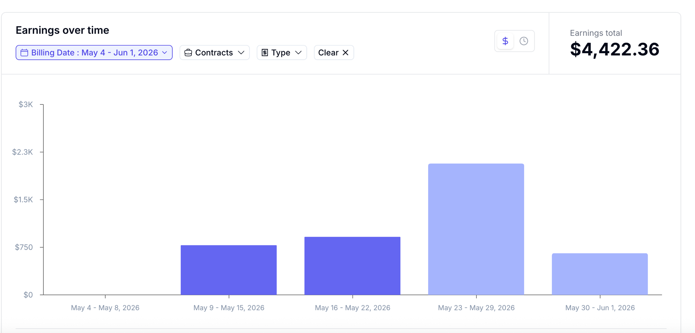

AITools, workflows, and adoption signals shaping tomorrow.
CareersGuidance for staying valuable as modern work changes.
Hidden EconomyPlatforms, roles, and paid opportunities most people miss.
If you read nothing else
AI evaluation doesn't care about your employment status. It pays for what you know — at your level, in your field. The 40-hour cap exists. Most people never get close to it.
📡 Market Signal
Anthropic is preparing for an IPO — at a valuation that changes the AI conversation.
Anthropic, the company behind the Claude model family, is moving toward a public listing. After raising at a $61.5B valuation and securing billions from Amazon and Google, an IPO would make it the largest AI-native company to go public. This is not a startup story anymore — it's the AI infrastructure economy becoming publicly tradeable.
The signal · When AI lab infrastructure goes public, the demand for human evaluation, RLHF, and domain expert oversight goes with it — at scale. The platforms paying for your expertise are serving companies whose valuations just got very, very serious.
A quick note before we get into it —
I know the job market is hard right now. As we all navigate this new normal, I hope this issue gives you a genuine glimpse of hope — because it's not theoretical. It happened. And it can happen for you too.
This issue is different. No market data, no trend reports. Just one month of real numbers, a real schedule, and what it took to get there. If you've been sitting on the idea of testing AI evaluation, this is the breakdown you've been waiting for.
There are two types of professionals reading this. The first has a job and a salary — and is curious whether AI evaluation is actually worth the time. The second is between roles, watching their options, and wondering whether this can actually bridge the gap.
The answer to both questions is the same: yes, and the playbook is identical.
Last month: $4,422. Roughly 14 hours a week. Flexible schedule. Never hit the platform's 40-hour weekly cap. This issue is the honest breakdown of how that happened — week by week, what changed, and what anyone with domain knowledge in any field can take from it.
This Week — 5 Developments
01
AI evaluation is not data labelling — and the difference is everything
Most people hear "AI evaluation" and picture clicking buttons or tagging images at $8/hr. That's data annotation — a different category entirely. AI evaluation at the expert level means reading a model's output in your specific domain and explaining precisely why it is wrong, where the reasoning breaks down, and what the correct answer looks like. Medical evaluators catch subtly incorrect diagnoses. Finance evaluators identify flawed risk models. Data scientists spot statistical errors in AI-generated analyses. The harder the domain, the higher the rate — and the less competition.
Why it matters · The skill being paid for is not AI familiarity. It's domain depth — the thing you already have.
The rate signal · Entry-level annotation: $8–15/hr. Expert domain evaluation: $40–150/hr. The gap is your years of experience.
From the inside — The Mercor AI interview tests whether you actually know your field — not whether you can use AI tools. A data scientist who understands credit risk and can spot a model's blind spots in that domain will pass. A generalist who "knows AI" probably won't.
02
The May breakdown — week by week, what actually happened
May 4–Jun 1. Four and a half weeks. $4,422.36 total. Here is how it moved:
May 2026 — Mercor earnings dashboard

Month total · May 4–Jun 1
$4,422.36
Week 1: onboarding, getting familiar with task queues, zero earnings. Weeks 2 and 3: consistent work, ~$800/week, roughly 10–12 hours each. Week 4: a new contract opened, quality score had been building — the better queue became accessible and the rate per task jumped. That single week accounts for half the month's total. The partial final week continued at the higher rate.
The pattern · The first week costs you nothing but time. After that, consistency compounds — quality score unlocks better work, not more hours.
From the inside — The week 4 spike wasn't luck. Quality scores are the algorithm — they determine which task queues you can access. The professionals earning at the top end aren't working more hours. They've built quality scores that put them in front of higher-value tasks automatically.
Referral link — gets your application reviewed faster.
03
The 40-hour cap — and why not hitting it is the point
Platforms like Mercor operate with a weekly hours ceiling — typically 40 hours. The cap exists to manage task supply across their evaluator network. In May, the average was around 14 hours a week. The cap was never reached. That is not a failure — it's the model working as intended. AI evaluation is designed to run alongside whatever else you have going on. The flexibility is structural, not a marketing promise.
What this means practically · You can treat this as 5 hours a week or 35. The rate stays the same. Your quality score travels with you regardless of how many hours you log.
The ceiling signal · For anyone wanting to scale: the path is quality score first, hours second. A higher score at 20 hours beats a lower score at 40.
From the inside — "Flexible" is an overloaded word in the gig economy. Here it means something specific: no schedule, no minimums, weekly pay, and a ceiling you can approach or ignore. That's a different contract than most employment arrangements offer.
04
Job or no job — the playbook is identical
The platform does not ask for your employment status. It asks about your domain expertise and then tests it. Whether you are currently employed, between roles, consulting, or searching — the onboarding, the task queues, and the payment structure are the same.
If you have a job
Your expertise earns twice — once from your employer, once from evaluation work. The 14-hour average fits around a full-time schedule without friction. Your employer's opinion is not required.
If you're between roles
$4,422 in May is above UK median monthly income and close to US median. This is a bridge that doesn't require a CV submission, a recruiter, or a three-week notice period. It starts when you pass the interview.
The shared requirement · Domain expertise in a field where AI outputs can be wrong — finance, healthcare, law, data science, engineering, research. If you've spent years in a discipline, you qualify.
From the inside — The professionals earning the most from evaluation work are not treating it as a fallback. They're treating it as a parallel track — a second income stream that runs independently of whatever else is happening in their career.
05
Let's see how last month actually went — flexible hours, 55 total
May. $4,422. 55 hours total — and that was what I could manage around everything else. Not maximum effort. Just what the schedule allowed. No set hours, no daily check-ins, no one chasing you. Worth noting: the first stretch includes onboarding and reading through task instructions carefully — that time counts but doesn't always pay immediately. Once you're past that, you're in the work.
Hours — May 2026
55 hrs
~14 hrs/week · flexible schedule
Earned
$4,422
Didn't hit the 40hr cap once.
The flexibility signal · 55 hours is what was available. The cap is 160. The gap between them is yours to fill — or not.
What to track · Quality score above everything. Hours are secondary. The score is the only number that changes what's available to you.
From the inside — Onboarding takes time and so does reading instructions properly the first few times — don't skip them. That groundwork is what builds the quality score that unlocks everything else. The 40-hour cap was never hit. It's there if you want it.
📡 Signal & Chatter
What the community is saying — and how it maps to May.
›
Quality score is the only metric that matters. This is exactly what drove week 4. The $2,200 week wasn't more hours — it was the task queue that four weeks of consistent quality had unlocked. Score first, hours second.
›
The Mercor interview is harder than most job interviews. It tests actual domain knowledge, not AI tool familiarity. The barrier is the point — it's what separates the higher-rate queues from the open ones.
›
April's quiet was part of the process. Task supply fluctuates. The month that looked like nothing was building the score that made May possible. Consistency through the slow weeks is what compounds.
›
55 hours across a month is less than most people think. That's roughly two hours on a weekday evening, skipped entirely on busy days. The flexibility is real — not a marketing line.
👾 Here's the chatter on Reddit
Real post titles from r/WorkOnline, r/beermoney and similar — and how they map to what happened in May.
"Honestly Not a Bad Year, Made More Doing AI Training Than Actual Job Salary." High-engagement thread, Mercor cited as the highest payer. This is the trajectory — not overnight, but over months of consistent quality work compounding into something that rivals a salary.
"Milestone post. 2 months on Mercor." Users sharing payment confirmations via Stripe after their first few months. The pattern holds: slow start, then it compounds. May's week 4 was month five. The milestone threads are written by people who didn't quit at month two.
"Tried multiple AI training platforms. Here's what worked (and what didn't)." A thorough comparison of Outlier, Alignerr, and Mercor on hourly rates and stability. The consistent finding: platform fit matters more than hours. Domain experts consistently report better economics where the interview bar is higher.
"Updated experience with Mercor so far." A follow-up post sharing total earnings over 2.5 months to show that perseverance leads to real income. The update format is telling — people who stick around long enough to have an update to share are the ones earning.
From the inside — Every one of these threads describes the same pattern: slow start, quality score builds, better queues unlock, earnings compound. That's not a strategy. That's exactly what the May numbers show.
🪪 Emerging Career Title
This week
AI Domain Evaluator — Professional Track
What started as a side gig category is developing a professional track. Platforms like Mercor are creating tiered evaluator programs — with quality-based progression, domain-specific contracts, and rates that reflect senior expertise. The role: apply deep field knowledge to evaluate frontier AI outputs, flag failure modes, and provide structured feedback that trains the next model iteration.
This is not the same as freelance annotation work. It requires genuine seniority in a field, structured written reasoning, and the ability to identify subtle errors — not obvious ones. The professionals building careers here are treating their quality score the way a consultant treats their reputation: slowly, carefully, with long-term thinking.
How to position: Register your domain expertise explicitly on your platform profile. Apply to domain-specific projects rather than open queues. Treat the Mercor interview as a senior consulting pitch — not an onboarding form. Your CV credential is your domain years, not your AI tool familiarity.
🧭 AI Trainer Platforms
Apply once. Work when you want. Your domain expertise is the qualification — not your coding skills.
Platform
Best for
Pay range
DataAnnotation
Strong writers, generalists
$20+/hr
Outlier (Scale AI)
STEM, medicine, law, coding
$20–50/hr
Mercor
Domain experts, frontier lab eval
$25–200+/hr
Mindrift
RLHF, red-teaming, evaluation
Varies
OpenTrain AI
Global network, 110+ countries
Varies
Alignerr / micro1
Expert-tier evaluation
$30–100+/hr
🆕 New This Week — AI Jobs
AI Trainer & Evaluation Roles
New
AI Domain Expert — Data Science & ML — Remote · Global · Mercor · $70–150/hr · referral available
New
AI Trainer — Coding & STEM — Remote · Global · Outlier AI · $20–60/hr
Legal AI Evaluation Specialist — Remote · freelance · Mindrift · bar admission or equivalent
New
Senior AI Evaluator — Finance & Risk — Remote · Global · Mercor · domain expertise required
New
AI Red Teamer — Financial Services — Remote · Alignerr · $30–100/hr
Emerging & Conventional AI Roles
AI Literacy Lead — EU AI Act compliance · regulated industries · emerging fast
Human Review Lead — Agentic Systems — enterprise · escalation management · post-ServiceNow wave
AI Governance Analyst — Remote · NIST AI RMF · $90–130K
Responsible AI Program Manager — enterprise · cross-functional · $120–160K
ML Operations Lead — production model monitoring · DataBricks / Vertex AI · $140–190K
The pattern this week: domain-specific evaluation roles are posting faster than generalist ones. Finance, healthcare, and legal evaluators are seeing the widest supply gap — and the highest rates. If that's your background, now is the time to be on the platforms.
The income from AI evaluation is a side effect of something you've already done — spending years getting good at a field. The platforms aren't looking for people who learned AI last year. They're looking for people who can tell when AI is wrong, in language that only a practitioner would use. That expertise exists in this community. The only question is whether it's registered somewhere that pays for it.
"A second income source doesn't just change your bank account. It changes how you show up to the first one."
💬 One question — reply and tell us
Employed, between roles, or building something new — which one are you right now?
One word is enough. We're building a clearer picture of where this community is so we can make the coverage more useful. Hit reply.